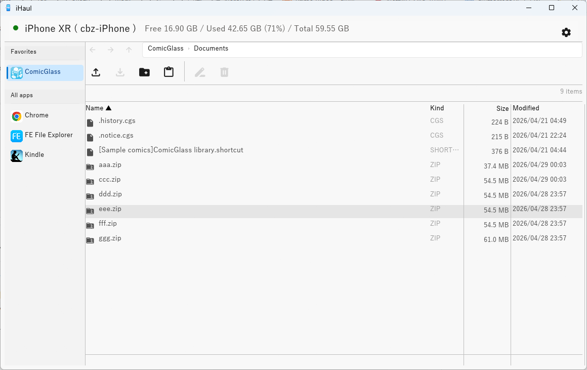
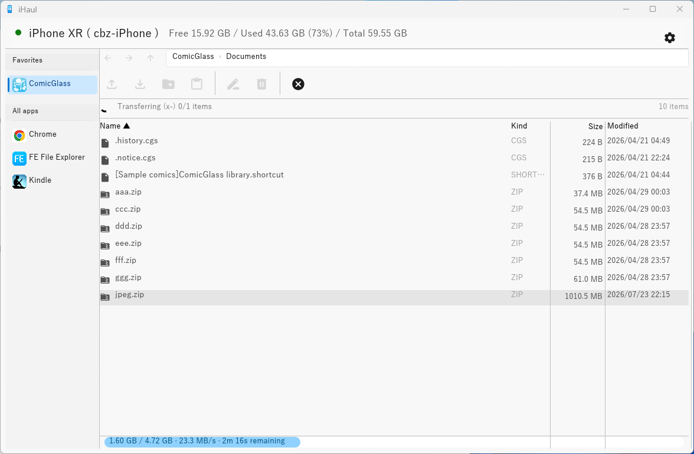

Features
🔌 Auto-connect
Detects your iOS device automatically when plugged in via USB — no manual setup.
📁 File browser
Navigate app Documents folders with an Explorer-style interface.
⬆ Upload
Drag & drop, Ctrl+V paste from Explorer, or file dialog. Folders supported via D&D / Ctrl+V.
⬇ Export
Download files and folders to a local folder with folder structure preserved.
⚡ Parallel transfers
Transfer multiple files concurrently with speed and progress tracking.
🌐 Multilingual
English, 日本語, 中文 — switch in Settings.
Requirements
- Windows 10/11 (x64)
- iTunes or Apple Devices for Windows (provides the USB driver)
- iOS device trusted on the PC ("Trust This Computer" prompt)
- Target app must have File Sharing enabled (
UIFileSharingEnabled = true)
Usage
- Connect your iOS device via USB and tap Trust on the device if prompted.
- Launch
ihaul.exe— the app detects the device automatically within a few seconds. - Select an app from the sidebar to browse its Documents folder.
- Use the toolbar buttons or drag & drop to upload files.
Keyboard Shortcuts
| Key | Action |
|---|---|
| Enter | Open folder |
| Alt + ← / Mouse XButton1 | Back |
| Alt + → / Mouse XButton2 | Forward |
| ↑ / ↓ | Move selection |
| Shift + ↑ / ↓ | Extend selection |
| Ctrl+V | Paste files from Explorer clipboard |
| Delete | Delete selected files |
| F2 | Rename selected file |
Installation
Download ihaul.exe from the Releases page and run it directly — no installer needed.
⚠ Windows may show a SmartScreen warning on first launch. Click "More info" → "Run anyway" to proceed.
Build from Source
cargo build --releasePrerequisites: Rust 1.85+, Visual Studio Build Tools ("Desktop development with C++" workload) + rustup target add x86_64-pc-windows-msvc, NASM (add to PATH).
Built With
| Library | Purpose |
|---|---|
| idevice | Pure Rust iOS communication library |
| eframe / egui | Immediate-mode GUI |
| tokio | Async runtime |
| rfd | Native file dialogs |
License
MIT — free to use, modify, and distribute.